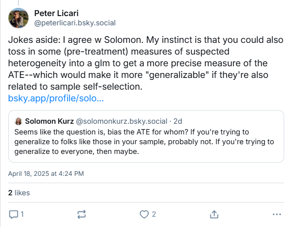
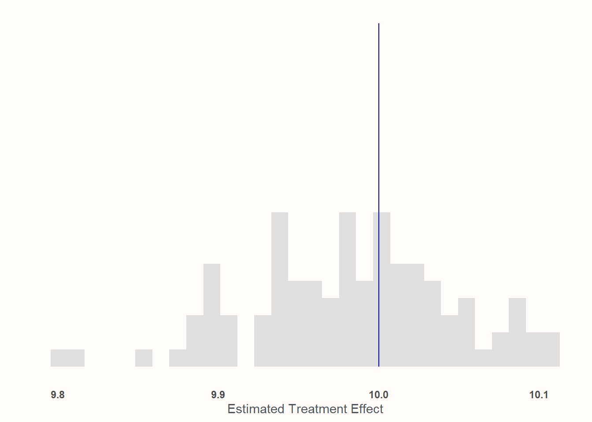
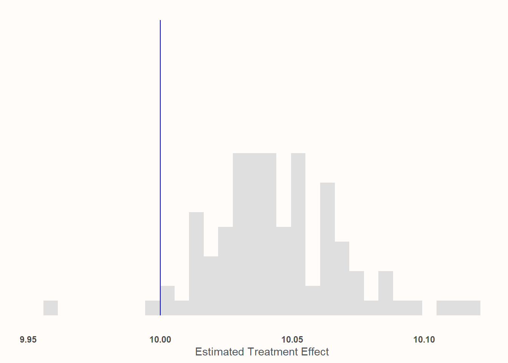
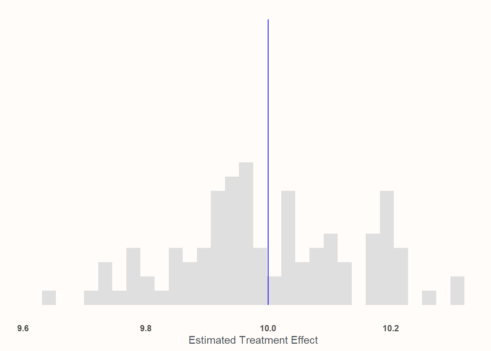
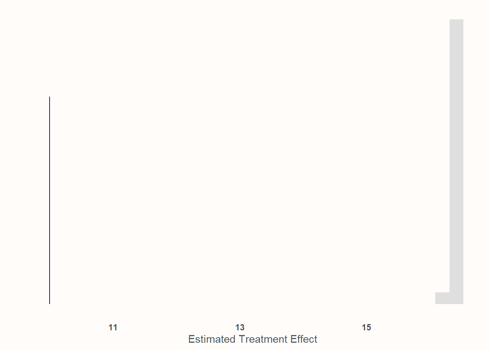
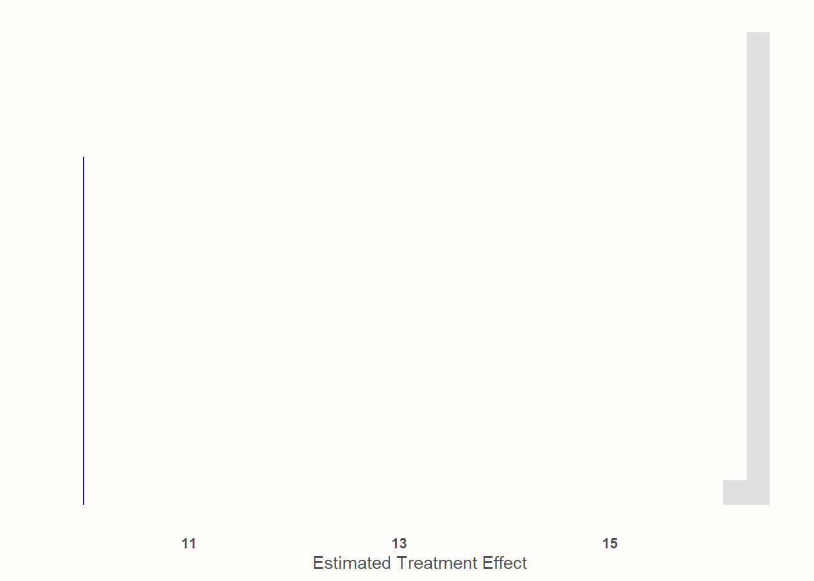
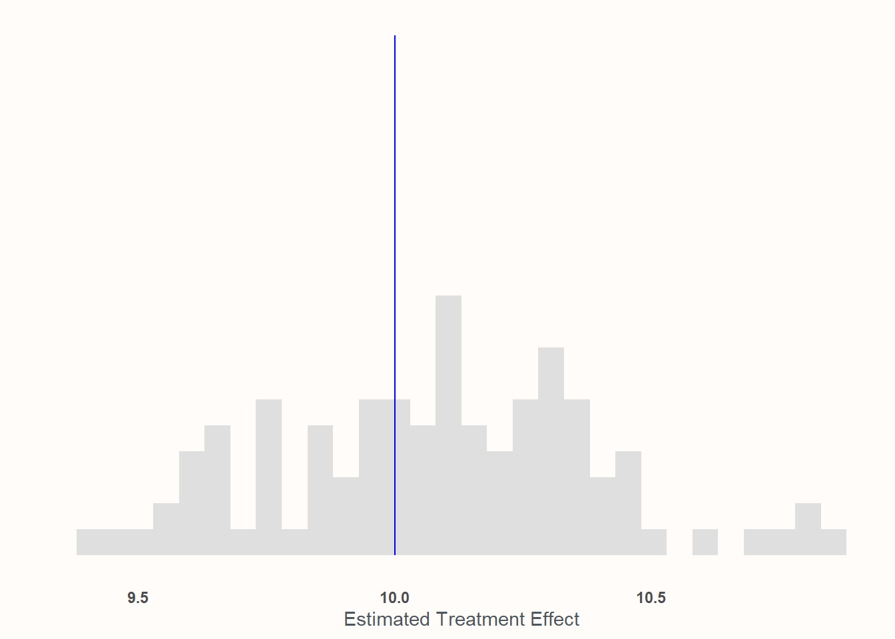

My original response1 to the post basically boiled down to the tried-and-true data science-ism of “it depends!”2

I wanted to elaborate on this answer a bit. Partially because this stats stuff is hard and there’s always room for more resources. (I don’t know how many times my butt’s been saved by some random technical blog post that someone whipped up and I like paying that forward.) Partially also because I enjoy deepening my knowledge of things through simulation; there’s some part of my dopamine system that just gets a kick out managing to learn something while going “hahaha computer go brrrr”.3 So let’s talk about when–and how!—you should be adding pre-measurement variables to your analyses of experiments to make your estimate “generalizable” to a broader population.
Spoiler alert:
It’s when you expect the treatment effect to vary in intensity as a function of some variable that is also pertinent to sampling.
Wait isn’t randomization enough?
One of the core promises of randomized controlled experiments4 is that randomized assignment allows us to get an estimate of what the impact the treatment has. Most frequently, people are looking for the “Average Treatment Effect” or ATE—though there are lot’s of TEs that you can be interested in.5 The reason that randomization manages to grant us this knowledge this is thanks to the mathematical magic of “expectation”. (Here’s an image from Julia Rohrer that illustrates it beautifully.) If we’re testing the effects of caffeine on written output6, we can’t simultaneously give a participant coffee and not give them coffee and then observe the true difference in their performance; we can’t actually directly observe the counter-factual. But we can calculate the expected values of those in the treatment and control conditions and then estimate the difference between them. This difference is the ATE—and so long as we’re randomly assigning people to the various conditions in the experiment, we’re getting an unbiased estimate of the expectations. Consequently, we can have an unbiased estimate of the ATE. (You know, as a treat.) Though this randomization is technically sufficient, it’s generally acknowledged (see, e.g., Gelman, Hill, and Vehtari 2020; Chernozhukov, Hansen, Kallus, Spindler, and Syrgkanis 2024) that it’s fine to include some relevant pre-treatment variables into your analysis: it usually won’t cause any harm and it may actually improve the “precision” of the estimated ATE.7
But an unbiased estimate of the ATE for whom?.
People are usually running experiments because they want to have some insight into what some “treatment” does to members of some population of interest. It could be customers (current or potential), US adults, website visitor adult Lego enthusiasts—whomever. But whether or not the experiment gives an estimate for the population of interest depends on a few things: most obviously, the process of how the participants were selected. If I wanted to see how a discount might induce former customers to resume their purchasing, testing on current customers might not get me an accurate answer. There may be things that are structurally different about the people who have tried my product and quit versus those who have tried it and continued—meaning the treatment could work differently across the two populations. It’d be even sillier to forgo any kind of sampling on customers (current or former) and instead perform the test on a sample comprised entirely of architects and vexilologists. Unless your product is in the weird niche of tracking the appearance of different building styles on flags.8.
The point being—and this is the thrust of David’s original question—is if you want to assert that your ATE generalizes to your actual population of interest, who you’re including in the experiment is likely going to matter a lot.
Likely though, is doing some lifting. Because whether having a sub-sample (even a biased subsample) matters is going to also depend on to what extent your treatment varies across sub-groups. That is, whether or not there are heterogenous treatment effects. To prove what I mean, let’s do some simulation on 4 different scenarios:
The sub-sampling is not biased and there are no heterogenous treatment effects.
The sub-sampling is biased and there are no heterogenous treatment effects.
The sub-sampling is not biased and there are heterogenous treatment effects.
The sub-sampling is biased and there are heterogenous treatment effects.
In all four of these cases, we’ll compare our estimates of the ATE with and without pre-treatment measurements to show how and when they help with recovering the ATE.
Simulation Set-Up
We’re going to set-up a simulated population of 100,000 individuals. For our research, we’re interested in seeing if whether playing the character “Jeff the Shark” in the hit game Marvel Rivals makes people more favorable towards actual sharks.9
The outcome measure is a sliding scale of 0–100 (Y). Let’s say that our population scores a 50 without any experimental interventions: they’re neither warm nor cold on sharks prior to treatment. In our simulated experiments we’re going to sample 1,000 at a time with about 500 getting the treatment of playing Jeff the Shark (Tr). Let’s say that the impact of playing as Jeff causes people to rank sharks as 10 points more favorable. Let’s say that, when considering heterogenous treatment effects that playing as Jeff induces a more powerful effect older people.10 This will be shown with Y_1. Age will be denoted as A.In another universe, there is no different effect for age. Everyone in the treatment condition is induced into rating sharks more favorably; their total favorability score will be shown as Y_2. In the universes where the sampling is biased, we’re going to say that older people are more likely to participate in the experiment. This will be operationalized via a softmax function on Age (A_{sampling}). We’ll run 100 iterations of our simulated experiments to get a sense of how well they’re capturing the ATE. We’ll attempt to recover the ATE using ol’ reliable: Ordinary Least Squares regression.11
Specifically, I’ll run a regression with a treatment dummy on the dependent variable:
Y \sim Normal(\mu, \sigma) \\
\mu = \beta_0 + \beta_1Tr
Y_1: Heterogenous treatment effects with mean of 10.
6
Y_2: Constant treatment effects at \beta_1 = 10
Simulations
No biased sampling and non-heterogenous treatment
In this condition, 1000 individuals are sampled in a totally random way12 and the treatment effect of playing as Jeff is consistent for all participants.
results <- purrr::map_vec(1:100, function(x){ sample <- (dplyr::slice_sample(universe, n =1000)) mod_real<-lm(Y2~Tr, data =sample) est_ate <-coef(mod_real)['Tr']return(est_ate)})

Take a look at the scale of the x axis! Everything is basically between 9.9 and 10.1. I would say we’ve captured the effect quite well!
This is probably unsurprising: this represents, like, the absolute best case scenario! Random assignment, no weird sampling. This is the Platonic ideal of an experiment.
But like other Platonic ideals: it will never exist unadulterated in reality. So let’s move on to the next case!
Biased sampling but non-heterogenous treatment effects
Here, we’ll look at chases where we’re not performing an unbiased sample of the population anymore. Instead we’ll sample based upon a softmax function of age so that older people are more likely to participate in the experiment.
results <- purrr::map_df(1:100, function(x){ sample <- (dplyr::slice_sample(universe, n =1000, weight_by = A_s)) mod_real<-lm(Y2~Tr, data =sample) est_ate <-coef(mod_real)['Tr']return(tibble::tibble(est_ate, mean_age =mean(sample$A)))})
Recall that, by construction, the average age in the population is 50. Here, it’s 82!

This one may look a bit worse but, again, look at the x axis! We’re basically dead-on at 10—to the point where I’m pretty confident that any deviation from expectation is either the computer or me goofing something up in the code. Place your bets!
For what it’s worth: This is why many experimental social scientists accept samples that seem totally unrepresentative like MTURKers or university students.13 If the thing you are analyzing/testing for is more-or-less universal (or, at least, has no structural heterogeneity in the ways that these samples differ from the population of interest), then you don’t need to get a perfectly “representative” sample to get an unbiased estimate of the ATE. That said, the idea that the treatment does not vary across the dimensions that make the experimental participants different than the population of interest can be a very strong one! Possibly an implausibly strong one. It needs some form of justification.14 If it can be justified, though, then it opens up a lot of doors for applied researchers!
No biased sampling but heterogenous treatment effects
Here, we’ll assume that the efficacy of the treatment is a function of age. Younger people have weaker effects and older people have stronger effects. An 18 year old told to play as Jeff the Shark only feels 3.5 points more favorable towards sharks on the 100 point scale afterwards. An 81 year old, however, is so enamored by Jeff that they are a wallopping 16.2 points higher on the scale than their non-treatment counterparts. Despite this variation, the mean treatment effect at the mean age is still 10. And because we are interested in the average treatment effect, this variability won’t really pose a problem so long as we’re not engaging in any biased sampling. The variation of our estimates will be larger to reflect the variability of the treatment effect itself, but since our sample size is fairly large (1,000), we’re likely to get quite close to the Te=10 mark.
results <- purrr::map_vec(1:100, function(x){ sample <- (dplyr::slice_sample(universe, n =1000)) mod_real<-lm(Y1~Tr, data =sample) est_ate <-coef(mod_real)['Tr']return(est_ate)})

The chart above matches those expectations exactly. If we look down at our x axis, we’ll see that we’re still clustering really tightly around 10—but our range is measured more to the tenths’ place rather than the hundreths. This is due to the variability of the treatment effect mixed with the variability of sampling. But so long as you’ve got random sampling, you still don’t need to incorporate pre-treatment covariates into the analysis.
But don’t worry. That’s (finally) coming next!
Biased sampling and heterogenous treatment effects
Here we are, at the main event. We not only have heterogenous treatment by age—with the treatment being much more effective on older people than younger people—we also have sample composition biased by age—with older people being more likely to join in the sample compared to younger people.
Again, the average age of the universe is 50 and the ATE is 10. Here, it’s 82 and the sample ATE (or SATE)15 is 16.35! Substantially higher! We can see that if we plot out the analysis that we achieve if we simply regress Tr on Y_1 without doing anything with age.

Wow, what a miss! The procedure is very accurate at estimating the SATE, but completely whiffs at the population ATE. In order to recover the population ATE, we’ll need to incorporate information about age into the regression. However, there’s a wrong way and a right way to go about this.
The wrong way: Just chuck age into your regression
Your first instinct may be something as follows: Age is acting as an antecedent variable for both sample selection and the effect of the treatment. This seems pretty close to what we might experience if we were trying to perform causal inference on observational data: a confound on both our main treatment and our dependent variable. So we should be all good if we simply controlled for age, right? Adjust our equation to read as follows:
\mu = \beta_0 + \beta_1Tr + \beta_1A
results <- purrr::map_df(1:100, function(x){ sample <- (dplyr::slice_sample(universe, n =1000, weight_by = A_s)) mod_real<-lm(Y1~Tr + A, data =sample) est_ate <-coef(mod_real)['Tr']return(est_ate)})

Drat! It didn’t really do anything at all!
This would have worked if Tr was a function of A plus other stuff. But it’s not. A actually has no path to Y_1 through Tr in our construction. A doesn’t effect Tr—it effects the strength of Tr. If older folks were more likely to be treated once in the experiment and if age was also correlated with the dependent variable, then we’d be able to control for A and recover the ATE.16 But the random assignment works fine; it’s the sampling that’s biased. Merely controlling for age by adding it as its own covariate will not be enough to recover the population ATE. In order to do that, we need to consciously model the heterogenous effects within our regression.
The correct way: Explicitly modeling the heterogeneity and then modeling the ATE
Fortunately, if you’re familiar with regression analysis, you’re probably already familiar with about most of what we need to do to recover the ATE: run an interaction term. This is, in fact, one of the more “basic” ways17 to model yet another TE—the Conditional Average Treatment Effect or CATE. So we’ll make our formula instead:
Just like “knowledge” in the old GI Joe cartoons: this is only half the battle. We actually need to know how the relevant factors are distributed in our population. From there, we can model what the population ATE is by estimating E[Y|Tr=1,X=\mu] - E[Y|Tr=0,X=\mu]. Or, we can take advantage of the insanely helpful {marginaleffects} package18 and its average_slopes function, which allows you to estimate the slopes given specific values of other variables.19
results <- purrr::map_vec(1:100, function(x){ sample <- (dplyr::slice_sample(universe, n =1000, weight_by = A_s)) mod_real<-lm(Y1~Tr*A, data =sample) est_ate <- marginaleffects::avg_slopes(mod_real, marginaleffects::datagrid(A =50)) est_ate <- est_ate[2,'estimate'] # Tr is the 2nd row in the dataframereturn(est_ate)})

Et viola! We’re recovering the population ATE again! This, understandably, has the most variance out of all of the means we’ve done so far, but we’re far closer than when we did nothing or when we simply added age in without accounting for the heterogeneity.
Answering the original question
So, as we can see here, the answer to David’s question of whether an experiment fielded to a small sub-sample of an original group will provide a biased estimate of the treatment effect is…it depends! Nothing about all the work we did changes that fundamental answer—isn’t social science fun?!
But we hopefully now have a better idea of what it depends on. It depends on:
Whether there is something structural biasing who is included in the sample. And
Whether that structural force also influences the strength of the treatment.
If only 1 or 2 is the case then the sample’s ATE remains a good estimate of the broader population’s ATE. However, if both are true then you can recover the sample’s ATE pretty easily but generalizing it to the population of interest will require explicitly modeling that treatment heterogeneity and then using your knowledge of the population to model its ATE.20
That’s all for now! Time to be a scientist in the tradition of Newton and perform my experiment on myself.
Although, from my experience in graduate school, I can promise that this chestnut is hardly exclusive to data scientists. Maybe it’s more accurate to think of it as a “tried-and-true right-hand-side-of-the-Dunning-Kreuger-curve-ism”.↩︎
I suspect that this impulse shares wiring with the parts of my brain that enjoys Bolatro.↩︎
or “A\\B tests” or “randomized trials”, whatever phrase you prefer.↩︎
Such as Average Treatment Effect on the Treated (ATT), Conditional Average Treatment Effect (CATE), Local Average Treatment Effect (LATE), and more!↩︎
Ya know, purely hypothetically—nothing to do with my lifestyle at all here.↩︎
What you really don’t want to do is incorporate post-treatment variables. That can completely screw up your estimates.↩︎
If it is, I can only assume that CGP Grey is your largest—if not only—customer. Maybe Roman Mars, too.↩︎
An alternative experiment is under way to see how much playing against him makes people dislike sharks because, goddamn it, what a broken-ass character. I acknowledge this but I main-him almost exclusively.↩︎
Why? Because, in truth, I designed the code and checked it long before coming up with the narrative contrivance—but if you’d like me to bullshit you a plausible-ish reason, I can certainly try! This PhD has to be worth more than 60k in student debt!↩︎
“Wow Peter”, you say—and by “you” I mean the 7 or so I’ve been consistently annoying with my evangelism—“I’m surprised you didn’t go Bayesian here!” To which I reply: “Even I would like to have this analysis done before the heat death of the Universe.”↩︎
Well apart from the obvious fact that these samples are cheap and research, in general, ain’t.↩︎
However, that’s also not an invitation to blugeon prospective research. A potential critique that claims the effect aren’t static, when absent evidence, is also an unjustifiably strong claim! In my opinion, the proper course would be to let the research get published (with potential limitations clearly noted) and for people who don’t think it will generalize to a different sample to respond to it and state their case publicly—or maybe even conduct their own research! Let as much evidence shine as possible. Thank you for coming to my TED talk.↩︎
At least if there weren’t also age-dependent heterogenous treatment effects. Then it’d stop working again!↩︎
In quotes because, at this point, there’s very little “basic” about any of this!↩︎
Arel-Bundock V, Greifer N, Heiss A (2024). “How to Interpret Statistical Models Using marginaleffects for R and Python.” Journal of Statistical Software, 111(9), 1-32. doi:10.18637/jss.v111.i09 https://doi.org/10.18637/jss.v111.i09.↩︎
In the normal case for OLS where you’re just adding IVs together, specifying different IV values won’t do anything. But things multiplied is a different story.↩︎
I just wanted to note that though the subsection where I detailed this is called “the right way”—this is merely an example of the right way of thinking and not the only mechanical way to perform it. You can do this using other methods to either estimate heterogenous effects and/or estimate E[Y|Tr=1,X=\mu] - E[Y|Tr=0,X=\mu].↩︎
![]()